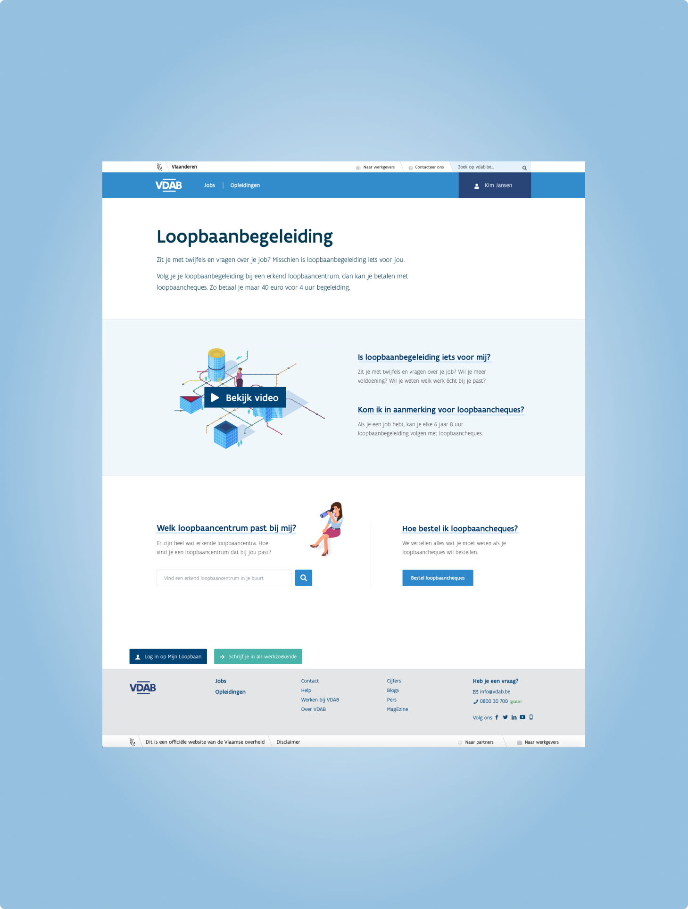
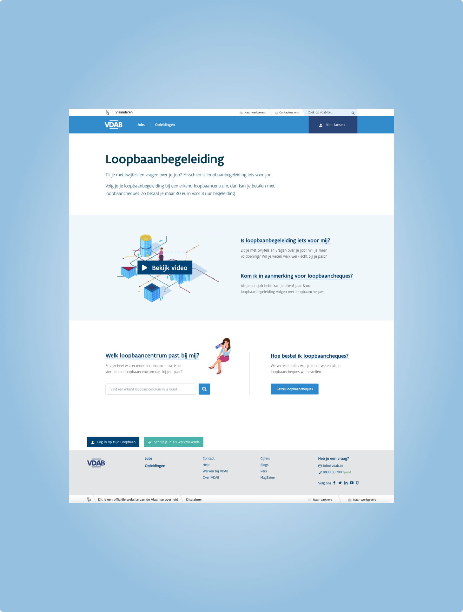

Webapp dashboard
An ancient landingspage in serious need of an update. Transforming an incredibly static page – merely containing entry points to various other applications – to an insightful dashboard, bringing all the relevant data directly to the user. And of course, considering more than 50% of users visit via mobile, offering a reponsive experience this time around.
Personalized homepage
A unifying project to accommodate our users in finding an overview of all their career-related services in one go. Required to be usable by anyone everywhere, meaning a strong emphasis on being super-userfriendly, accessible, and responsive.
Tasklist dashboard
A challenging, classicaly overloaded, legacy application that was (over)due for an overhaul. The main improvement was reducing the length and complexity of the list, changing it into a combination of priority-based "new"-alerts and custom presets to filter – effectively handing the users a trackable to-do list.
Contentpages
Apart from interactive webapplications, there have also been a multitude of static contentpages to (re)design, adhering to the branding styleguide and coherent with the client's overal digital presence. Again, usability is key which means larger fonts and spacing, easily distinguishable links, and in-your-face CTA's.
 

Design system
For the past six years, I have maintained, extended, and rebuild our current in-house design system. This consists of HTML & Sass files with BEM formatting, compiled by a NPM-Gulp combo into a markdown/handlebars documentation site. Here we document our branding and guidelines as well as present standalone components and full code-ready html mockups.
Housewarming (side project)
A superfluous side-project I did for fun and to avoid answering the same questions a gazillion times, while providing a streamlined way for everyone to get their drinks. It's thrown together with Vue.js and a very shoddy JSON backend.
Most likely no longer fully functional (I won't show up with a drink), but still online to take a look.
Live demo (Made for mobile)